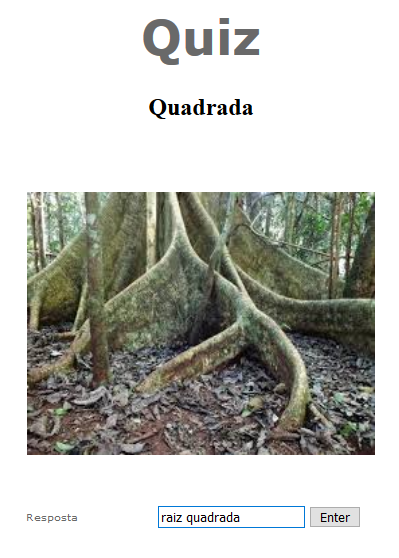

Apresentamos o quiz Metrohm. Ele é muito simples, serão dadas duas dicas. Uma palavra e uma imagem e você terá de adivinhar do que se trata. Abaixo segue um exemplo.

As respostas devem ser escritas com acento. Podem existir respostas compostas de no máximo duas palavras.